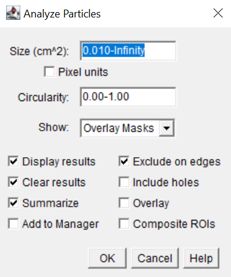

Abundantie- en oppervlaktebepaling van groepsfoto’s met ongewervelden in ImageJ
Anouk Ollevier
 0000-0003-2758-4723
0000-0003-2758-4723
Instituut voor Natuur- en Bosonderzoek (INBO)
anouk.ollevier@inbo.be
2026-01-23
10.5281/zenodo.18349389
Metadata
| reviewers | documentbeheerder | protocolcode | versienummer | taal |
|---|---|---|---|---|
| Jan Van Uytvanck, Timon Boumon | Anouk Ollevier | sop-040-nl | 2026.01 | nl |
Controleer deze tabel om te zien of een meer recente versie beschikbaar is.
1 Wijzigingen t.o.v. vorige versies
1.1 2026.01
- Eerste versie van het protocol.
3 Onderwerp
Binnen het Procesbeheerproject [1] worden in elk subplot twee keer per jaar stalen van ongewervelden verzameld: één keer in mei-juni en één keer in augustus-september. In het labo worden de ongewervelden via triage uit het strooisel gescheiden en vervolgens per taxonomische groep gesorteerd. Met dit materiaal worden (a) groepsfoto’s gemaakt, waarop per taxonomische groep het aantal individuen en het oppervlak wordt bepaald in ImageJ (zie hiervoor deze SOP), en (b) de exemplaren gedetermineerd en ingevoerd in waarnemingen.be.
7 Werkwijze
7.1 Openen van de foto
Open ImageJ [2]
Laad de groepsfoto in via File > Open
De groepsfoto’s bevinden zich in de map: G:\ Gedeelde drives\ Procesbeheer\ PB11_Plotbemonstering\ PB_Plot_Invertebraten\ FOTO_SubPlot_Invertebraten\ Groepsfoto
7.2 Schaal instellen
Gebruik de Straight line tool en trek een lijn tussen de twee aangeduide referentiepunten. In het labo werden de punten zo geplaatst dat ze op een afstand van 50 of 150 mm van elkaar liggen. Als de punten in een vierkant liggen, zijn beide zijden 150 mm lang. Als ze een balk vormen, dan is de korte zijde 50 mm en de lange zijde 150 mm.
Klik vervolgens op Analyze > Set Scale. De waarde in pixels verschijnt automatisch. Vul bij Known distance 5 of 15 in, afhankelijk van de werkelijke afstand, en noteer bij Unit of length “cm”.
Klik op OK.
7.3 Threshold instellen
Klik op Image > Adjust > Color Threshold.
Pas alleen de twee waarden onder Brightness aan: zet de eerste waarde op 0 en kies voor de tweede een waarde tussen 160 en 220. De bedoeling is dat de organismen duidelijk rood gemarkeerd zijn, zonder dat de achtergrond te sterk meekleurt. Een paar rode puntjes in de achtergrond zijn geen probleem, want die kunnen later worden uitgefilterd.
7.4 Analyse per taxonomische groep
Groepeer en selecteer de organismen van één bepaalde taxonomische groep via de polygon tool. Trek een polygon rondom de groep.
Klik op Analyze > Analyze particles
Om ervoor te zorgen dat de kleine rode spikkels op de achtergrond niet worden mee geanalyseerd stel je Size (cm^2) in op ‘0.015-Infinity’. Dit zorgt ervoor dat objecten kleiner dan 0.015 cm² er worden uit gefilterd.
Kies bij Show voor Overlay Masks, zodat de geselecteerde organismen na de analyse zichtbaar en genummerd zijn.
Klik op OK.

Figuur 7.1: Analyze Particles scherm
Via Analyze Particles worden de objecten – hier dus de organismen – automatisch geteld en gemeten (o.a. oppervlakte) (zie figuur 7.1). De resultaten verschijnen in twee vensters: Results, waarin de metingen per individueel object binnen de polygon worden weergegeven, en Summary, dat een samenvatting toont van alle metingen voor de geselecteerde groep.
7.5 Opslaan van resultaten
Sla zowel het bestand Summary als Results op. Gebruik daarbij een vaste naamgeving:
foto-analyse-typeoutput-subplotcode-diergroep-datum(YYYY-MM-DD)
Bijvoorbeeld: foto-analyse-summary-dwhp-03c-kevers-2022-06-01
| Onderdeel | Omschrijving | Waarde |
|---|---|---|
| foto-analyse | Vast voorvoegsel, zodat alle bestanden van dezelfde analyse makkelijk terug te vinden zijn. | foto-analyse |
| typeoutput | Geeft aan welk type bestand het is: summary of results. | summary |
| subplotcode | De code die verwijst naar de subplot. | dwhp-03c |
| diergroep | De onderzochte diergroep. | kevers, wantsen, spinnen, … |
| datum (YYYY-MM-DD) | De datum van staalname (dus niet de datum van de analyse in ImageJ). | 2022-06-01 |
Referenties
[1] Instituut voor Natuur- en Bosonderzoek. (z.d.). Doel. Procesbeheer INBO. https://sites.google.com/inbo.be/procesbeheer/doel
[2] Schneider, C. A., Rasband, W. S., & Eliceiri, K. W. (2012). NIH Image to ImageJ: 25 years of image analysis. Nature Methods, 9(7), 671–675. doi:10.1038/nmeth.2089